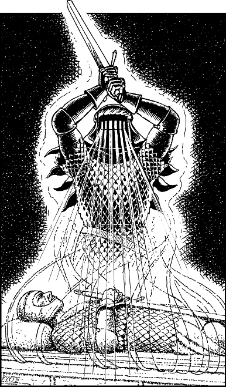

300
The sergeant has his men unchain you from the wall and march you at spear-point along the lower corridors and passages of the citadel, to a small chapel of worship that is dedicated to the Goddess Ishir. You and Karvas are pushed into this chapel and its heavy door is slammed shut and bolted behind you. Moonlight filters into this place of worship through leaded stained glass set into star-shaped alcoves near its vaulted ceiling. It casts a pale rainbow of colour upon a marble tomb which occupies the centre of the chapel floor. Its heavy stone lid is carved in the likeness of a recumbent knight whose hands are folded around the hilt of a broadsword.
Karvas is about to beat his fist on the bolted door and demand that he be allowed to speak to Dunwayne, but you stay his hand. Your Magnakai Discipline of Divination warns you that you and Karvas are not alone in this chapel. You detect a strong psychic presence that is centred upon the tomb. A sudden gust of wind sweeps through the chapel and you feel the air temperature plummet to near-freezing. Ice crystallises on the sides of the tomb and a ghostly plume of vapour seeps from cracks in the stone. This translucent mist swirls and condenses, and gradually it adopts the recognisable form of a knight in armour clutching the hilt of a broadsword. It is the ghost of the warrior whose remains are entombed here. He is a paladin knight, and his ghost has arisen to test your true purpose. The ghostly warrior raises his mighty sword and rays of eerie blue light flood out from the slits in the visor of his spectral helm. As this light washes over you and Karvas, you feel pulses of psychic energy assaulting your mind. The Prince lets out a scream and then he falls unconscious to the floor as the waves of energy increase in intensity.

If you possess Kai-screen, turn to 218.
If you do not possess this Grand Master Discipline, turn to 196.